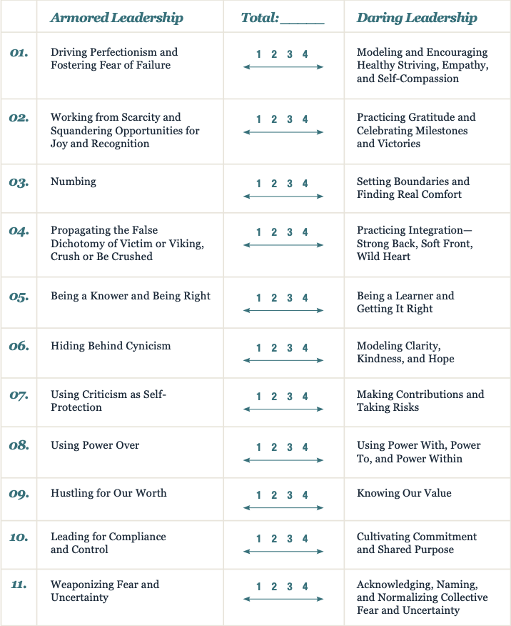
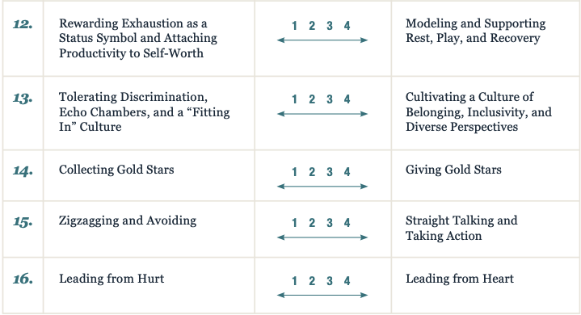

“Daring leadership is ultimately about serving other people, not ourselves. That’s why we choose courage.” ~ From Dare to Lead: Brave Work. Tough Conversations. Whole Hearts.1 by Brené Brown
Thoughts
It feels super inspirational to have finished this book. The book was excellent and it felt good to know that all the people who spoke highly of Brené Brown were justified in doing so. In the last few years, I’d come across Brené Brown’s name many times, through Booklists by leaders I revered2, YouTube feed, Amazon recommendation, etc. In a way, I was primed to read a book by Brené. So, when I chanced upon it recently, I jumped in. It was coincidental that I came across the excellent video on empathy 3 by Brené just when I started reading the book.
It feels natural to call the author by first name rather than the full name or the last name. After listening to the audiobook for over 8 hours, you feel like you know the author already. Or it may be due to the anecdotes in the book where she puts conversations where people call her Brené. For instance “BEN: Hey, Brené! Please pull all of the invoices together for me by four o’clock.” (Section 3 - The Armory). Throughout the book, people call her Brené and we also end up doing the same I guess. I generally prefer a book on kindle or printed since that is much faster to finish than an audiobook even at a speed of 1.25. But I’d really recommend the audiobook for this. Brené is an exceptional orator and her voice is so soothing and compelling at the same time that you feel like an esteemed teacher is right there with you, talking in person.
Another reason why I felt happy with the book was that it validated a lot of leadership thoughts and ideas that I had. Leadership is about bringing clarity, trusting people who work with you, empowering people, seeking constant feedback, making sure that people feel a sense of belonging, investing time ahead in planning and not pointing fingers when things go wrong, giving honest feedback from a place of vulnerability knowing that the relationship might sour, above all, putting empathy as the cornerstone of all the activities. Business goals that we achieve are for people and done by people.
The book has a lot of anecdotes, practical examples, and calls to action that it is useful to situations beyond the workplace. There are so many life-changing quotes in the book to ponder over. I underlined a lot of quotes and felt like I should take a print out and frame some of them. It is one of those books that when you read it and finish, you want to start reading again. I felt the same with 7 Habits (Steven Covey), 12 Rules (Jordan Peterson), Factfulness (Hans Rosling), 21 Lessons (Yuval Harari), Good to Great (Jim Collins), etc. I haven’t read other books by Brené Brown. So I was glad to hear her say that this book contains thoughts from her other books.
The main focus of the book is the call to become more courageous, creative, and caring; to grow through vulnerabilities and insecurities; to bring the full person to work, and not a part of the personality. Brené says that achieving workplace goals effectively and efficiently can be done without sacrificing humanity, by being trustworthy, authentic, and empathetic. She also mentions that “Rumbling with Vulnerability” is not about blindly airing your fears to everyone. The right audience needs to be told the right things.
There is a companion website called “Dare to Lead Hub” 4 with a lot more ways to get involved in the book with assessments, workbooks, and training. It seems like a movement in itself. Big Ideas from the book are presented in the “The heart of daring leadership” section in the Introduction. The notes below will give you highlights of some aspects of the book, especially the bulleted points mentioned at different places. But, ‘The Map is not the territory’, the summary is not the book. Reading the actual book is a totally different experience and I hope this encourages you to do so.
Notes
The title of Brené’s earlier book Daring Greatly came from a quote by Theodore Roosevelt -
“It is not the critic who counts; not the man who points out how the strong man stumbles, or where the doer of deeds could have done them better. The credit belongs to the man who is actually in the arena, whose face is marred by dust and sweat and blood; who strives valiantly; who errs, who comes short again and again…who at the best knows in the end the triumph of high achievement, and who at the worst, if he fails, at least fails while daring greatly.”
Introduction: Brave Leaders and Courage Cultures
- Brené’s goal is to take her two decades of research and experiences in hundreds of organizations to give us a practical, actionable book about what it takes to be a daring leader.
- I echo Brené’s sentiment that she wants to live in a world with braver, bolder leaders, and to be able to pass that kind of world on to the next generation.
- Definition of a Leader : “Anyone who takes responsibility for finding the potential in people and processes, and who has the courage to develop that potential.”
Ten behaviors and cultural issues getting in our way
- We avoid tough conversations including giving honest productive feedback.
- We spend an unreasonable amount of time managing problematic behaviors.
- Diminishing trust caused by a lack of connection and empathy
- Not enough people are taking smart risks or creating or sharing bold ideas.
- We get stuck and defined by setbacks, disappointments and failures.
- Too much shame and blame, not enough accountability and learning.
- People fear looking wrong, saying something wrong, or being wrong.
- When something goes wrong, individuals and teams are rushing to ineffective or unsustainable solutions.
- Organizational values are gauzy and assessed in terms of aspirations.
- Perfectionism and fear are preventing people from learning and growing
The heart of daring leadership
-
You can’t get to courage without rumbling through vulnerability. Courage is a collection of 4 skill sets than can be taught, observed, and measured a. Rumbling with vulnerability b. Living into our values c. Braving trust d. Learning to rise
-
Self-awareness and self-love matter; who we are is how we lead.
-
Courage is contagious
Part One: Rumbling with Vulnerability
Section One: The Moment and the Myths
- Three Lessons from Roosevelt’s quote mentioned at the beginning -
- Physics of Vulnerability - if you’re brave enough often enough, you will fail.
- Definition of Vulnerability - “The emotion that we experience during times of uncertainty, risk, and emotional exposure”. It is the courage to show up when we don’t know the outcome.
- Feedback needs to be authentic and should come from a place of vulnerability where the person puts himself/herself on the line.
- Rumble Tool - The Square Squad - Get a 1” x 1” piece of paper and write down the names of the people whose opinions of you matter. Take 10 minutes to reach out to those people and express gratitude.
- The 6 myths vulnerability -
- Vulnerability is weakness.
- I don’t do vulnerability.
- I can go it alone
- You can engineer the uncertainty and discomfort out of vulnerability.
- Trust comes before vulnerability.
- Vulnerability is disclosure. (Not only is fake vulnerability ineffective, but it breeds distrust.)
Section Two: The Call to Courage
- An anecdote about a time when her team gave Brené feedback about her time estimation. She remembered that her husband had given similar feedback in the past.
- It is not a long walk from “I’m not enough” to “I’m better”, but it’s actually just standing still.
- Treasure Hunting - 4 key learnings
- New Meeting minutes process - Someone volunteers as a note-taker and takes down the minutes capturing a)Date b)Meeting intention c)Attendees d)Key decisions e)Tasks and ownership.
- Turn & Learn - People write down their thoughts before anyone speaks up in a meeting. Avoids “Halo effect” (opinions shaped by person with the most influence) and “Bandwagon effect” (see where ‘the wind is blowing’ / agree with the majority).
- Gritty faith and Gritty facts - Stockdale paradox from ‘Good to Great’. The people who don’t make it after 8 years in captivity were the Optimists. Always confront the brutal facts of your reality.
- Care and Connection - Apologizing and backing that up with behavior change. “What’s my part” is critical to the success of the rumbling process.
- DeDe Halfhill’s story - Using the right language to talk about hard things.
- Container building - Make copies of this story, ask the team to review it, come back after 45 mins to discuss. No time? “If you don’t invest time attending to fears, you’ll have to squander time to manage unproductive behavior”!
- You cannot take responsibility for other people’s emotions.
Section Three: The Armory
- Wholeheartedness - “engaging in our lives from a place of worthiness. It means cultivating the courage, compassion, and connection to wake up in the morning and think, No matter what gets done and how much is left undone, I am enough …”
- Bringing your whole self to work is crucial to the company and individual success and satisfaction.
- The table comparing “Armored Leadership” with “Daring Leadership” is perhaps the best part of the book. The side-by-side comparison is found in the workbooks section5 in the Dare to Lead Hub.
- Their team switched to TASC model from Apple’s DRI (Directly Responsible Individual) model. TASC approach: the Accountability and Success Checklist -
- T — Who owns the task?
- A — Do they have the authority to be held accountable?
- S — Do we agree that they are set up for success (time, resources, clarity)?
- C — Do we have a checklist of what needs to happen to accomplish the task?
Section Four: Shame and Empathy
- Story about Brené hitting a glass wall and suffering a concussion at a very busy time, refusing to be treated and impacting everyone around.
- Shame 101 - a) We all have it, b) We are all afraid to talk about shame, c) The less we talk about shame, the more control he has over our lives
- How shame shows up at work - Perfectionism, favoritism, Gossiping, back-channeling, harassment, discrimination, bullying, etc.
- Give people a “way out with dignity”. What gets in the way? a) Armoring up, b) Time & Money, c) The fall guy, d) Lack of vulnerability and courage.
- Empathy is one of the linchpins of cultures built on trust. Five elements of empathy -
- To see the world as others see it, or perspective taking.
- To be non-judgmental.
- To understand another person’s feelings.
- To communicate your understanding of that person’s feelings.
- Mindfulness.
- Six known barriers to empathy -
- Sympathy vs. Empathy
- The Gasp and Awe
- The Mighty Fall
- The Block and Tackle
- The Boots and Shovel
- If You Think That’s Bad…
- Four elements of shame resilience -
- Recognizing shame and understanding its triggers
- Practicing critical awareness
- Reaching out
- Speaking shame
Section Five: Curiosity and Grounded Confidence
- Pool players example - Practice is key. Hundreds of hours of practice to build foundational skills make things seem easier.
- Grounded Confidence = Rumble Skills + Curiosity + Practice
- ”If I had an hour to solve a problem, I’d spend fifty-five minutes thinking about the problem and five minutes thinking about solutions.” (Einstein)
Part Two: Living into Our Values
- Three steps to live into your values -
- We Can’t Live into Values That We Can’t Name. Pick 2 values from the list (p 188) or name yours.
- Taking Values to Behavior.
- Empathy and Self-Compassion: The Two Most Important Seats in the Arena
- Get good at giving feedback. Go through the feedback checklist of 10 questions.
- ”Know my values = Know me”. “No values = No Me”.
- Operationalizinator - Someone who operationalizes values into skills-based behaviors that can be taught, observed, and evaluated.
- Assume positive intent and hold people to high standards.
Part Three: Braving Trust
- The BRAVING Inventory -
- B = Boundaries – Respect my boundaries, yet be brave to ask if something is not ok.
- R = Reliability – You do what you say you’ll do.
- A = Accountability – You own your mistake, apologize, and make amends.
- V = Vault – Don’t share information or experiences that are not yours to share.
- I = Integrity – Choose courage over comfort.
- N = Non-Judgement – We can talk to each other and ask for help without judgement.
- G = Generosity – Assume best intentions.
Part Four: Learning to Rise
- The three-step process for learning to rise -
- The Reckoning
- The Rumble
- The Revolution
- The Reckoning - Six most common offloading strategies
- Chandeliering
- Bouncing Hurt
- Numbing Hurt
- Stockpiling Hurt
- The Umbridge
- Hurt and the Fear of High-Centering
- Strategy for reckoning with emotion - Tactical Breathing - In for four, hold for four, out for four, hold for four.
- The Rumble - Shitty First Draft (SFD) - The first story that we make up. Be courageous to state your SFDs and improve it as you get feedback or more data.
- The Revolution - Taking off the armor and rumbling with vulnerability, living into our values, braving trust with open hearts, and learning to rise so we can reclaim authorship of our own stories. Courage is rebellion.
Notable Quotes
{{< expand “Cilck to view Quotes” >}} Quotes
”Clear is kind. Unclear is unkind."
"No trust, no connection."
"The cave you fear to enter holds the treasure you seek. (Joseph Campbell)"
"Mastery requires feedback."
"If you have more than three priorities, you have no priorities."
"Show up for people in pain and don’t look away."
"Daring leaders work to make sure people can be themselves and feel a sense of belonging."
"Cruelty is cheap, easy, and chickenshit. It doesn’t deserve your energy or engagement."
"Leaders must either invest a reasonable amount of time attending to fears and feelings or squander an unreasonable amount of time trying to manage ineffective and unproductive behavior."
"The courage to be vulnerable is not about winning or losing, it’s about the courage to show up when you can’t predict or control the outcome."
"Choosing our own comfort over hard conversations is the epitome of privilege, and it corrodes trust and moves us away from meaningful and lasting change."
"If you’re criticizing from a place where you’re not also putting yourself on the line, I’m not interested in what you have to say.”‘
”If you choose courage, you will absolutely know failure, disappointment, setback, even heartbreak. That’s why we call it courage. That’s why it’s so rare."
"Feeding people half-truths or bullshit to make them feel better (which is almost always about making ourselves feel more comfortable) is unkind."
"Our ability to be daring leaders will never be greater than our capacity for vulnerability."
"Shame is the most corrosive thing in work culture, as it changes the belief of who we can be and what we can do better."
"Self-awareness and self-love matter. Who we are is how we lead."
"Silence is not brave leadership, and silence is not a component of brave cultures."
"We fail the minute we let someone else define success for us."
"Cynicism and sarcasm are bad in person, and even worse when they travel through email and text."
"Daring is not saying “I’m willing to risk failure.” Daring is saying “I know I will eventually fail, and I’m still all in."
"Not getting clear with a colleague about your expectations because it feels too hard, yet holding them accountable or blaming them for not delivering is unkind.”
{{< /expand >}}
Book cover Image Credit: Google Play store
Footnotes
-
Brown, Brené. Dare to Lead: Brave Work, Tough Conversations, Whole Hearts. United States: Random House, 2018. ↩
-
Sri Shivananda (CTO of PayPal)‘s list of books - https://www.goodreads.com/review/list/43381983-sri-shivananda?shelf=favorites ↩
-
Brené Brown on Empathy - {{< youtube 1Evwgu369Jw >}} ↩
-
https://daretolead.brenebrown.com/workbook-art-pics-glossary/   ↩